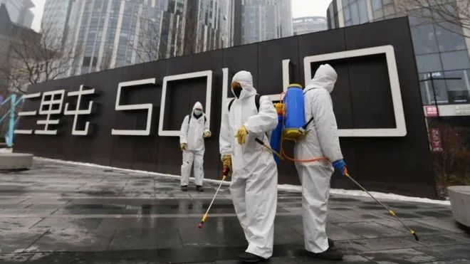

口述实录｜病毒围城，我用音乐治疗悲伤
原文链接 备份链接 我一度后悔自己离开了医生这个职业，他们那么缺人，我却不能跟他们一起冲上去。难过、绝望、内疚…… 口述 | 冯 翔**** 整理 | 陈 冰 …… 冬天腊梅花， 夏天石榴花， 晴天都是人， 雨天都是伢。 过路的看风景， …

受疫情影响，今年春节很多人没有办法回到家乡，只能独自留在工作的城市中。今天的来信者就是其中一位，疫情爆发之后她一直独自留在北京。往日的正常生活仍然没有露出回归的迹象，只有一场暴雪如期而至。

真正要生活的人必然得是坚韧的
撰文：李敏
2020.2.7
疏于记录的日子，发生了很多事。
像此刻这样焦灼而无出路的生活，过去 30 年我未曾经历过。2003 年我 13 岁，住在非典最初爆发的省份，离香港很近，但危机在那时似乎还没有大到要人们成天在家躲避、生怕厄运降临的程度。记忆之中，在那个我经常笑称为 32 线小镇的地方，只是道路很空，街道上的生意很坏，电视台每天播着跟非典有关的新闻。而让我今天想来仍颇感意外的是，那时候我们也没有停学。气氛倒一直是严肃冷寂的，每天我们放了学，教室会集中开着消毒灯。站在远一点的地方回望，能看到学校浸在一片紫色的暧昧中，因这颜色跳脱日常，就营造出一股此地不宜久留的气息。夏天来临以后，危机慢慢地消退了，在小镇逐渐恢复生机之时，非典变成两个你一提起就会牵出许多故事、信息和人物的字。可多年之后，人们在纪录片中讲述自己的故事，你才知道病毒的后遗症永远地留下了。在纪录片里，专家和医生提出警醒，有的人相信这个国家再也不会为类似的事情付出代价，也有清醒的人觉得病毒不一定从此就从我们的生活中销声匿迹。从这个国家今天的表现来看，那些悲观或清醒的人从不无端悲观，也从不无端清醒。
也许这次疫情以更严酷的姿态挑战了我们的生活。不，不是也许，是本就。我其实是带着期待向往着农历年之后好好振作，找到一份新的工作，一扫灰暗的 2019 年。我甚至把 2020 年属蛇人的年运看了一遍又一遍，企盼生活给我一点甜头，毕竟每日躲避在家无事可干并不是我的主观选择。但坏消息从除夕之前到今天就没有停下来过。因为严重的疫情，我在除夕甚至不敢轻举妄动，年夜饭只做了一盆紫菜鸡蛋汤，汤里有几颗家人在年前寄来的牛肉丸（年关将至快递延误，牛肉丸在路上闷了两三天，已经有一点馊掉）。此后的每一天，生活仿佛魔怔一般按照一个模式过着。无非是看电影、看书、刷手机、吃饭、睡觉，再看电影、看书、刷手机、吃饭、睡觉……如此重复下去，很快就“不知今夕是何年”。今年的正月初七，我没有像往年那样装模作样地给自己庆生。尽管在心底里我也不觉得真的要为了置身灾难中的他们而用愧疚淹没自己，因为生活仍然要过下去的，但在行动上，我没能没心没肺地“庆祝”。或许我的行动体现了我更深层次的潜意识。
使生活显得更加残酷的是，昨天夜里，李文亮医生去世了。我想，当悲愤与人们的微博和朋友圈一起不断翻涌的时候，人们终于清醒地认识到了自己的处境。当那个能在我们生病时真正为我们提供保护的“医生”死去的时候，我们才意识到，一块屏障消失了。在我们的心里，那原本是比一片口罩坚硬得多得多的存在。但现在，这个存在消失了，连同他的真诚本性与善意提醒。在这个无法被尽述的夜里，我正好在看钟孟宏执导的纪录片《医生》。纪录片里，温医生和他的妻子一起去给儿子扫墓，他们在阳光下为彼此拍下各自与墓碑的合影，画外音是温医生的自述。生命已逝，温医生不得不宽慰自己：“虽然他的形体已经走了，可是他是以另外一种形式，存在于我们的心中。”这句话也许也适合宽慰因李文亮的离去而伤心的人们。只是一想到这个年轻的生命来到这个世界只有 34 年，仍无法不令人为他扼腕。人们终究幸运地了解到，在有限的生命中给诸多人带去无限的积极影响，能做到的人少之又少——李文亮是少数人中的一个。
***
2020.2.12
又过去了快一周，疫情丝毫没有好转的迹象。早上醒来在床上刷微博，看到一条说新冠病毒在湿热和干冷的国家均有传播，疫情早期获得的“等天气热起来病毒就不会继续传播了”的希望顿时破灭。长期在这样能感受到威胁无处不在的生活里过着，到底会对人的身心会造成多大的影响？
幸运的是行动虽然受限，但小区未对租户的安全感造成太大的破坏。夜里我终于忍不住下楼了一趟，垃圾堆在门口，厨余垃圾更无法久留，我要下去处理垃圾。深夜 11 点，楼外几乎没有在行走的人，我看到黑色的地面，以为下着雨，观察了一下才发现没有。有一滩水似乎是化了的雪，在夜里是比地板更黑的颜色，反射着路灯微弱的光。在这样的夜里，人们的生活区域没有生机。以往在我站着的地方的左手边会有一些温暖的灯光，一家进口零食店，现在这些地方都暗着。菜店关门了，挨着菜店的肉店开着蓝色的消毒灯管。我往小区外面走，边走边想这么晚了门口会不会还有保安？小区会被封了吗？

▲北京三里屯，工作人员正在进行消毒。照片来源：路透社
几天没见，原来我常出入的小区门口关了，但另外开了两个口，一个进一个出。在电梯里才看到，6 号的时候小区已经开始给业主和租户办出入证。真是个奇怪的举措，人们有钥匙就能表明自己拥有某处的出入权，现在要画蛇添足，便于保安“管理”我们。当然了，权力这样的东西，总是别人认为你有你才有。你以为你天生就有的，只是还未得到机会证明那是幻觉。保安例行公事问我为什么不办出入证，告诉我何时何地能办出入证，叮嘱我早点办出入证，否则再要出去没有出入证也不行了，“甭管你是业主还是租户……”我对强权向来反感，但此刻燃不起气焰，保安的上头有上头，上头还有上头。保安要吃饭，我要买东西。我隔着口罩跟保安大哥交谈，他说一句我点一下头，好的，我知道了，谢谢。最后我终于获得自由，再一次拿到白色的门卡，去超市买一些吃的东西。
泡面只剩一款了，出现了一些我没见过的品牌。面包货架被扫荡一空，剩下两大袋吐司，我拿走了日期新鲜的一包。酸奶，饼干，抽纸。难得出门，大半夜也要冒着失眠的危险喝咖啡。没有看到新一期的《财新》。这时候就有点后悔去年没随便做一个工作保持收入了，那至少能让我在此时购买战时物资时能不要想东想西，还希望节省了。疫情结束之后，要把对找工作上面的完美主义改掉。
原本希望走多几步路去买两袋喜欢吃的泰国芒果干，但路上很黑，我又怕小区门会关，走了几步又回去了。灯光稀少且无人的深夜马路，像一个危险的提示器，令我不安。不远的地方有药店的牌子亮着，那里一定没有口罩。头顶的月亮昏黄，我想它也感到了孤单。
***
2020.2.14
暴雪如期而至。昨晚睡前有人在朋友圈问了一句“暴雪下起来了吗”，我惦记着雪，10 点多醒来就到窗口去看了一眼。雪下得狠的时候，是像大雨那样泼下来的。视线一片灰白，以暗色的楼房做背景，就能看到密集的雪落下来时连起来的根根直线。我发微信给朋友，说这雪大得好像有什么冤情。
囤着的物资几乎吃光了，搜刮冰箱的时候会想起以前冷藏到被我忘记的鸡肉和猪肉。每次清空冷藏室，我就把那些冻得硬邦邦的肉全扔掉，当时也没觉得多珍贵。正常日子过起来真是恣意又麻木，偶尔还会被一些人事牵连到觉得“人间不值得”，现在想想还是天真了。倒不是说如今就觉得人间值得了，不同的时期有不同的生活考验，但相对来说，眼下这种生活还是严酷得多，束缚也多得数不过来。
朋友和爸妈听说我只有几片面包和一碗泡面，都提醒我多买点食物备着。这就是严酷日子里的小小 bonus 吧，是真正的“风月同天”。出了楼，才发觉雪下得真是大，一双鞋踩到雪里，鞋旁边的雪还要高出不少。但就没有了脚踏实地的安全感，深一脚浅一脚走出去，鞋又很滑，真怕摔倒。走了几步路就看到人流量大的菜店门口雪都变成掺着碎冰的水。春天确实来了，对于还残留几分“炎热天气能杀死病毒”的期望的人们来说，大雪是不被欢迎的。
春节期间关掉的小区大超市终于开了，雪落在超市门口的残弱小树上，白白的有点像樱花了。我也不大记得有多久没在这个超市里正经地买很多东西了，发现买菜也能在网络上买之后，就很少有机会进超市了。从这个意义上说，疫情让这个超市迎来生机。逛了一会儿听到肉摊老板和顾客吵了起来，声音很大，起因大致是顾客觉得肉不新鲜，老板觉得顾客不会分辨肉是腥味还是臭味。一个性子急，一个觉得被误会，听了不好的话自然火气大。吵了一会儿，刚刚一直和我保持一米多的顾客又提着肉走了，戴着口罩看不见脸，大概都是怒气吧。我补了一些粮油米面，想起大人说要补蛋白质，又要了一大篮鸡蛋。怕一只手拎着东西在雪地上失去平衡，我让收银员给了两个袋子。

▲北京火车站前，大批返回北京的旅客。照片来源：美联社
这样又深一脚浅一脚又去菜店，路过那摊碎冰水，鞋子都湿了。进菜店的压力显然比进超市大很多，因为这个菜店很小，大家又不大买得到菜，就都来这里买了。草莓降了价，我大胆买了一盒。番茄价格翻了一倍，不敢买了，比肉都贵。苹果倒是多少降价一些，一个富士苹果 4 块钱。这样买了两趟，回到房间觉得头很晕，可能是戴着口罩缺氧了。买菜像打仗，压力很大又无从消解，真的希望这样的日子快些结束。
午睡醒来以后，我发现我丢了一袋白菜，已经付了钱。不记得是在哪个环节丢的了。
***
2020.2.21
早上快 10 点，接到快递打来的电话，迅速起了床，一次性手套、一次性口罩、帽衫的帽子戴上，带子扎紧，抽两张纸巾用来按电梯按钮，带上这几天的垃圾，全副武装出了门。疫情仍然使人心连心，前天家人花 60 块钱运费再次寄来冰鲜的牛肉丸和牛杂。
天气不太好，视线都是灰的。抬手扔垃圾，想起自己很久不曾在这个时间点呼吸空气，是那种早晨来了一会儿、正午的太阳又没升到当空以前，湿湿的空气。走出小区，看到以往在 8 点半会站满上班的人的热闹的路口依然萧条，树自然也还是光秃秃的，也许春天并未真正到来。我捏着淡绿色的印有“众志成城 万众一心”、“战胜新型冠状病毒肺炎”的小区临时出入证，不知道为什么突然悲从中来。这是一种复杂的感觉，我不知道为什么得自己下楼取明明应该送到家门口的快递，不知道为什么扫码就能够向别人展示我最近 15 天都在北京，不知道为什么要给一个陌生人看过我的租房合同、身份证以及管家姓名和电话以后，取得“出入证”才能自由出行，不知道为什么我戴着手套，口罩又很闷，我和对面的人都没有看清彼此的脸，不知道为何我在此时此地，此时此地又为何如此。我想起之前抱怨这些的时候，朋友给过我的朴实无华的答案：活着。
只不过虽然不解，大家的情绪还是比较稳定，又或者那是夹杂着压抑的不得不平静。是啊，真正要生活的人必然得是坚韧的，生活会给我们很多考验，想要活下去就不得不如此。“不然还能去死吗？”我的朋友有力地对此戏谑道。平时互相之间大概有竞争的快递公司如今也显得平等了，所有的快递员站在各自的送货小车面前，守着一方小小的区域，等人来领。有一瞬间我觉得置身广州湿热的夏天中午，没有课的女生穿着睡衣下楼，在闹哄哄的人声中匆匆取走快递。现在想起来，那真是一段后知后觉才感到应该快乐的日子，可惜当时都被我用来担忧未来了。假如知道那时的未来就是今天这样，还能快乐起来吗？会不会连走向今天的勇气都没有？
转身准备回家时，看到平常总去的水果店开了门，我往水果店的方向走去，像探访老朋友一般。这里不知何时卖起了菜，番茄一斤比小区菜店的便宜 1 块多。我掂了掂手里的快递箱子，想着还是不要为回家的路承担更多无谓的重量吧。仍然盼望着早日恢复正常的生活，但夜里看到新闻说北京几个医院出现聚集性感染，希望就又被击沉了。

疫情不仅深深影响了我们当下的生活，也将长期占据着我们的记忆、改变我们的思想。我们需要更多双眼睛，继续观察、记录时代中的危机与转变。这些真挚而沉重的纪录，我们会留存它。
投稿邮箱：anonymous@owspace.com
Launched in 2009 by an independent bookstore in Beijing, One-Way Street is a quarterly journal that publishes essays, fiction, poetry, art, and criticism by emerging writers and artists from around the world.

《单读 23 · 破碎之家》已经上市****
*它又意外地应景了*
***点击小程序购买阅读***
原文链接 备份链接 我一度后悔自己离开了医生这个职业，他们那么缺人，我却不能跟他们一起冲上去。难过、绝望、内疚…… 口述 | 冯 翔**** 整理 | 陈 冰 …… 冬天腊梅花， 夏天石榴花， 晴天都是人， 雨天都是伢。 过路的看风景， …
原文链接 备份链接 “ - 疫 情 之 下 - 如果没有按下全国的紧急暂停键，所有居民足不出户，所有像老陈这样的物业人员全力守护的最后一公里，也没有现在渐近的明朗和希望。 ” 1 大年30那天中午，重庆渝北某小区的物业管家老陈在家和家人 …
原文链接 备份链接 目前为止，伽蓝已累计捐款捐物超过1000万元，全国近2万名医护人员用上了伽蓝的产品，我们感到非常自豪，能够为一线医护人员尽一些绵薄之力。 口述 | 陈涓玲 整理 | 沈 林 最近的一个多月以来，每天从早到晚都在忙忙碌 …
原文链接 备份链接 在我家，一直是爸爸负责买菜。在闭门不出的日子里，食物一度成为爸爸最担忧的事情。 他的恐慌在 2 月 7 日小区完全封闭时达到顶峰。那几天，小区里先后确诊了 7 例新冠肺炎患者，还有多例疑似，救护车呜啦呜啦来了好几趟，前 …
原文链接 备份链接 “ - 疫 情 之 下 - 疫情没有结束，我们的工作仍在继续。在这场“战疫”中，我们的付出终有所获，经营户对我们的理解，人民群众对我们的信任，鼓舞着我们在疫情蔓延的环境下不断向前。 ” 我的朋友是一名市场监督管理所的 …